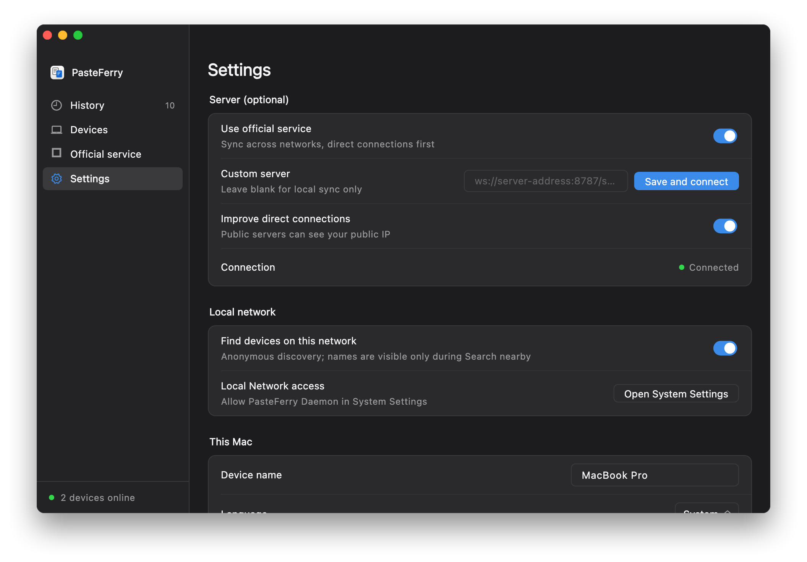
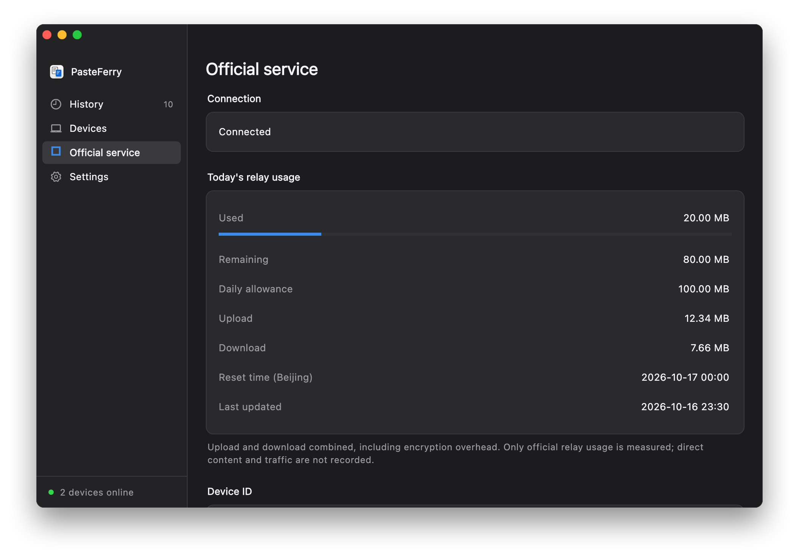

PasteFerry / Official service
Across networks, no hosting
Install 2.1.0 or later on every computer, enable official access in Settings, then pair. Signaling introduces the devices; content travels directly whenever possible and uses encrypted relay only after direct failure.
Download the latest appThree steps to sync across networks
- Install the latest app and turn on background sync on every computer.
- Enable Settings → Use official service on each computer and review the essential-data notice. No official hostname or port to enter.
- Show a pairing code on one computer, enter it on the other, and compare both fingerprint lines before confirming. Existing pairings are kept.

Direct first, relay when needed
Official signaling exchanges connection information between online peers. The clients try STUN discovery and NAT traversal first, requesting relay only after that direct attempt fails. Content remains end-to-end encrypted.
Direct traffic does not use relay allowance
The current default is 100 MB per machine quota group per day, upload plus download, resetting at midnight Beijing time. Reinstalling does not guarantee a fresh allowance. The usage page shows the actual limit, remaining amount and update time. Direct connections still work when relay allowance runs out. Allowances and availability may change; check the app.
Your choice to enable it
Official access is off on fresh installs. Enabling it records essential access statistics; an application-specific machine digest is derived only when relay is requested. Real device names, raw system identifiers and copied content are not uploaded as statistics. See the privacy notice for fields and retention.
Self-hosting stays independent
LAN, custom servers and Tailscale continue to work without the official gateway. Host your own public server when you need to control capacity, then use Save and connect beside its custom address.

Privacy and essential data · Self-hosting guide · pasteferry.cc